Big Orange Crayonmusical thingsBryan Thomas and the Kamikaze Hearts The Larkin, Albany, NY April 13th, 2002 Sorry it took so long to develop these, it was a long week. No review for now 'cause I'm still super busy, but I had a good time. Pictures: The Larkin is a sitting-down kind of place, so please excuse the hot shoulder action. Bryan Thomas 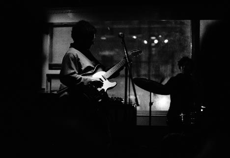 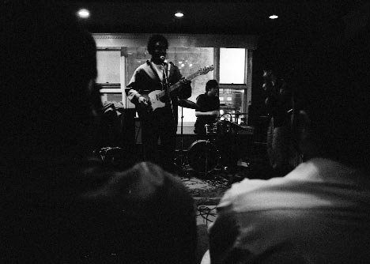 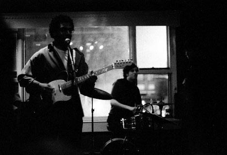 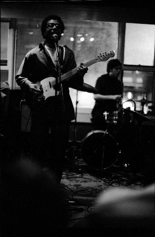 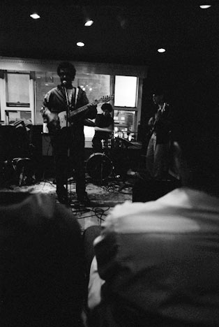 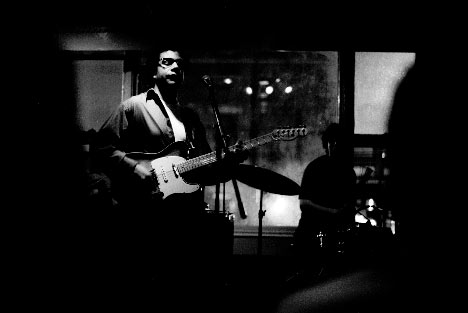 The Kamikaze Hearts 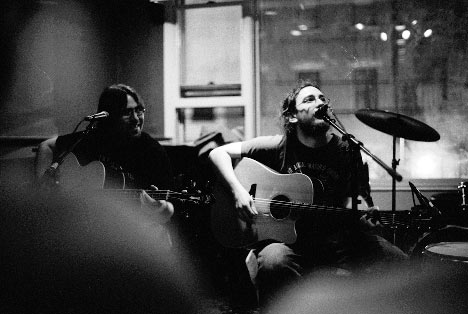 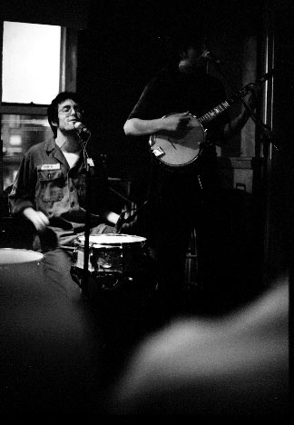 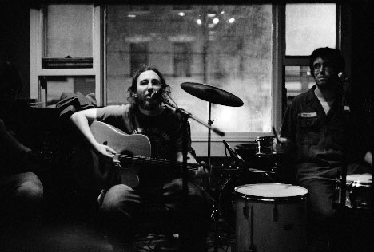 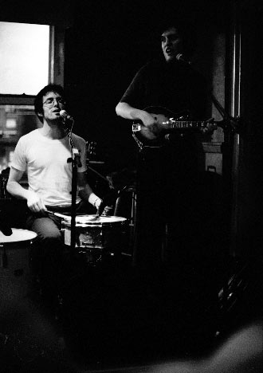 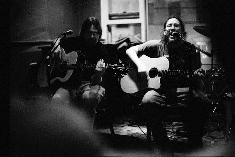 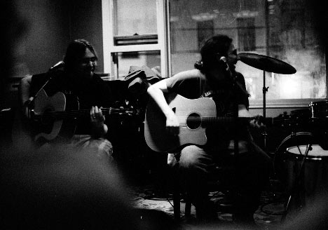 Camera stuff: Body: Nikon FM2n Lenses: 50mm f/1.4 and 24mm f/2.8 Nikkors Film: Fuji Neopan 1600 exposed at 3200, developed 20 minutes in Rodinal (1+100) at 18 degrees Please don't use these elsewhere unless you are in one of the bands or are a nice person. |